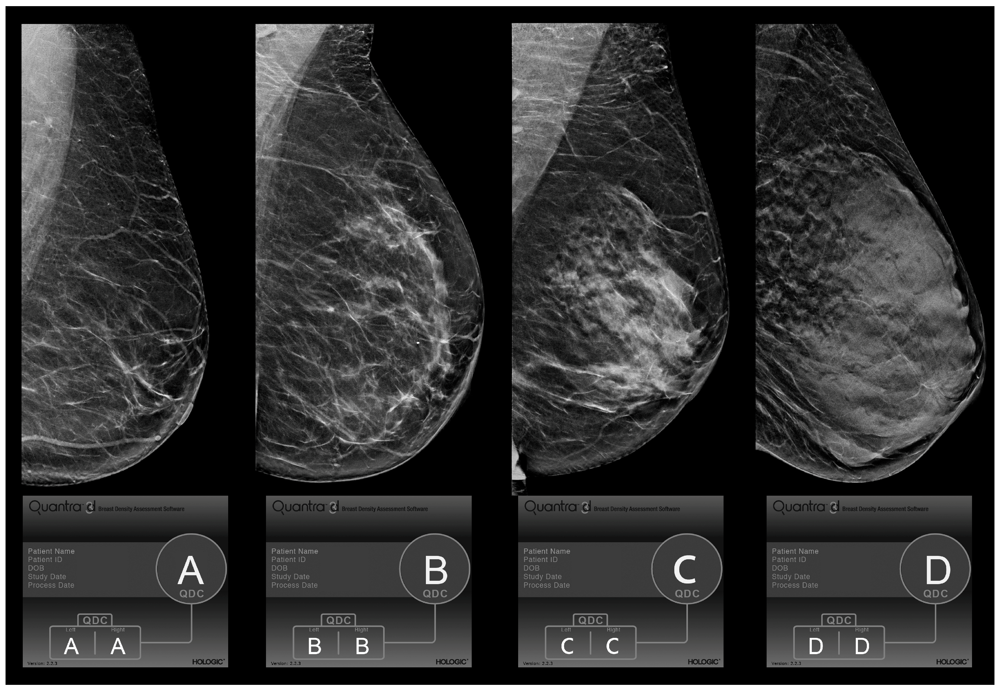

What are BI-RADS?
By uploading the image of your mammograms, we would estimate the BI-RADS(Breast Imaging Reporting and Database System) score you may have in terms of breast density. This may be either A, B, C, or D. This works because the proportion of fat to non-fat areas in the breast may be an indication of risk of breast cancer. Denser breast are more likely to develop cancer than less dense ones.
